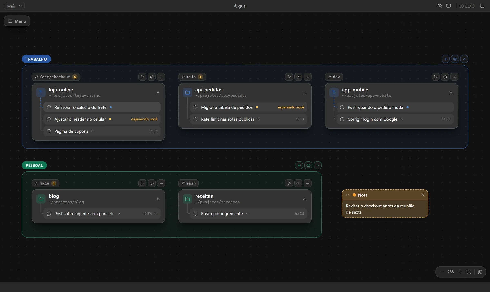

✎Blog
Como o Argus usa a sua assinatura do Claude, sem chave de API
O Argus não fala com a API: ele roda o claude que já está na sua máquina.
Blog › Bastidores

Uma decisão do começo do projeto foi não pedir chave de API. Quem usa o Claude Code no dia a dia já tem uma assinatura, e pagar por uso de novo só para ter uma interface não faz sentido.
O claude da sua máquina
Cada conversa do Argus é aberta pelo Claude Agent SDK apontando para o claude instalado no computador. O SDK não chama a API direto: ele abre esse claude e conversa com ele. Por isso a conversa usa o login que já existe e se comporta como no terminal, com o mesmo prompt, CLAUDE.md, configurações e MCPs.
O que o app lê
Para mostrar o histórico e o status das conversas, o Argus lê os arquivos que o próprio Claude Code grava em ~/.claude: o histórico de cada sessão e o status de cada Claude Code aberto. É assim que ele enxerga também as conversas abertas no terminal ou no VS Code.
O cuidado
Esses arquivos são formato interno do Claude Code, não uma API pública. Cada parte do app que depende deles tem anotada no código a versão em que foi conferida, para que uma mudança seja percebida rápido.
Continue lendo

ProdutoPor que um canvas para acompanhar agentes de código
Dez abas de terminal não escalam. O que muda quando cada projeto vira um bloco.
 Novidade
NovidadeUse o Argus de casa pelo notebook e pelo celular
O acesso remoto liga dois computadores, e o celular vira um controle das conversas.
ProdutoTrabalho e pessoal, cada um com a sua conta do Claude
Por que o Argus liga uma conta do Claude a cada grupo do canvas.
Construindo o jeito aberto de acompanhar agentes de código.
O Argus é a base para trabalhar com vários agentes ao mesmo tempo, com tudo à vista e na sua máquina.
Baixar o Argus